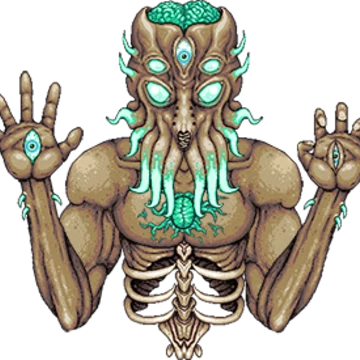
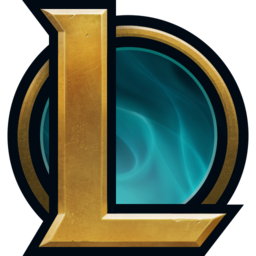
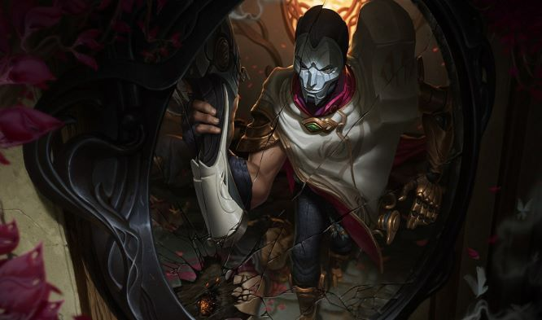
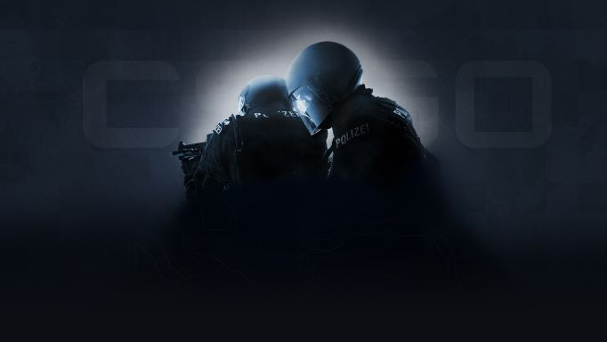
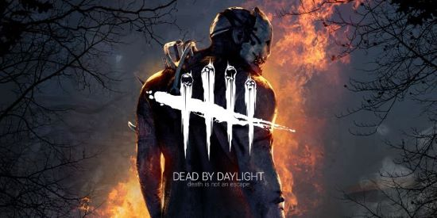
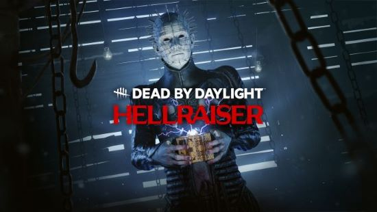
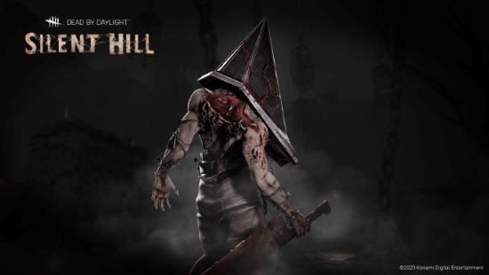

Nick Finnemore ITIS3135 Hobby Information
Video Games
One of my hobbies is playing video games. I mostly play multiplayer games as I find them the most fun when I'm online with my friends. I've played a lot of games through out the years, but here are a few of my favorites.
Terraria
Terraria is a single or multiplayer game featuring adventuring, intense boss fights, and building as its key features. Over covid I beat a modded version of the game with my friends which took over 100 hours. I have beat the game a few times and know I will play through it again at some point, but who knows when.
| The Final Boss - The Moon Lord | The Game's Homescreen |
|---|---|
|  |

|
Images found on the Wiki page and the Steam Page.
League of Legends
League of Legends is one of the most played games in the world and has championships peaking at over 4 million people watching at once. I have played this game on and off since 6th grade. I have no idea much time I've put in this game, but its probably a lot. The gameplay revolves around attacking and defending your team's base in a 5 vs 5 format. Games are heavily reliant on teamplay and can take over 30 minutes to finish. There is even an award winning TV show made story of the game called Arcane.
| The Game's logo | My Favorite Character - Jhin |
|---|---|
|  |  |
Images found from League of Legends Official Website and Wikimedia.
{kind=link}
Counter Strike
Counter-Strike is another teambased 5 vs 5 game except this one is a shooter. The game has one team defending two locations and the other team attacking one of the locations. The last team standing wins or if the attacking team takes one of the locations. The game is over after one team gets 16 wins.
| Counter-Strike's loadscreen |
|---|
|  |
Image found on Counter-Strike website
Dead by Daylight
Dead by Daylight is another team based game except its 4 against 1. The team of 4 are the surviviors who try to repair generators to escape from the 1 man team for the killer. As it sounds, the killer is trying to kill the survivors and is played by another person. The game as it's own unique killer and also features famous horror movie icons like Freddy Krueger, Leatherface, the Cenobite, and more.
| Dead by Daylight | The Cenobite from Hellraiser in game | Pyramid Head from Silent Hill in game |
|---|---|---|
|  |  |  |
Image found on The game's storepage and It's official website.